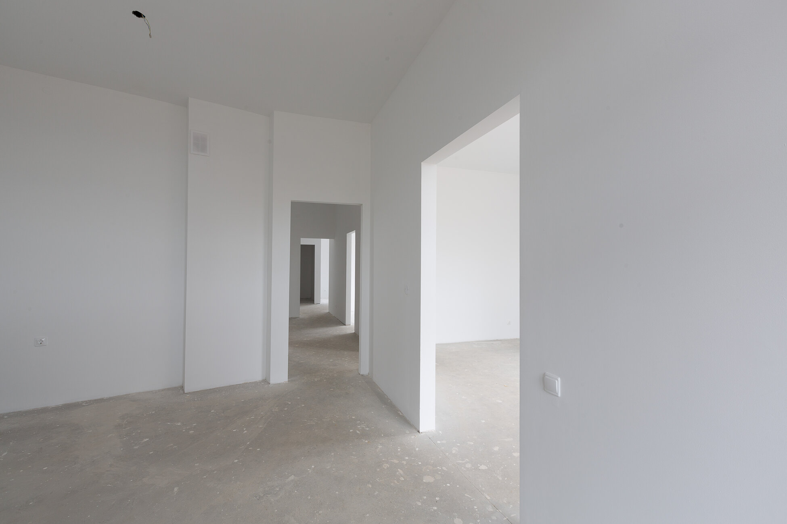

Закрытый контур и база инженерии
Дом под ключ в комплектации серый ключ
Серый ключ подходит тем, кто хочет получить дом с закрытым контуром, установленными окнами и подготовкой к следующим этапам инженерии и отделки.
- От 52 000 ₽/м²
- Окна и дверь уже в составе
- Подготовка к внутренним работам
Что входит в серый ключ

Преимущества серого ключа
- Дом уже защищен по внешнему контуру.
- Можно планировать внутренние работы без спешки.
- Инженерная база подготавливается заранее.
- Удобный баланс между бюджетом и степенью готовности.
Чем отличается от других вариантов
FAQ по серому ключу
Обычно нет, так как дом еще не полностью подготовлен под проживание и чистовую отделку.
Да, это один из самых удобных форматов для поэтапного завершения дома.
Следующий шаг — белый ключ: стяжка, штукатурка, разводка инженерии и подготовка под чистовую.
Другие комплектации
Контакты
Если нужен дом с закрытым контуром и инженерной базой, оставьте заявку на расчет серого ключа.
+7(921)618-23-77- Telegram: @CKcaizer
- Email: info@sk-kaizer.ru